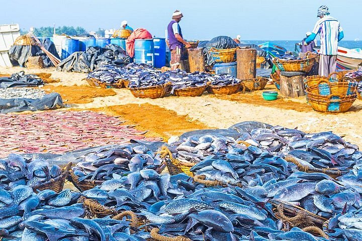
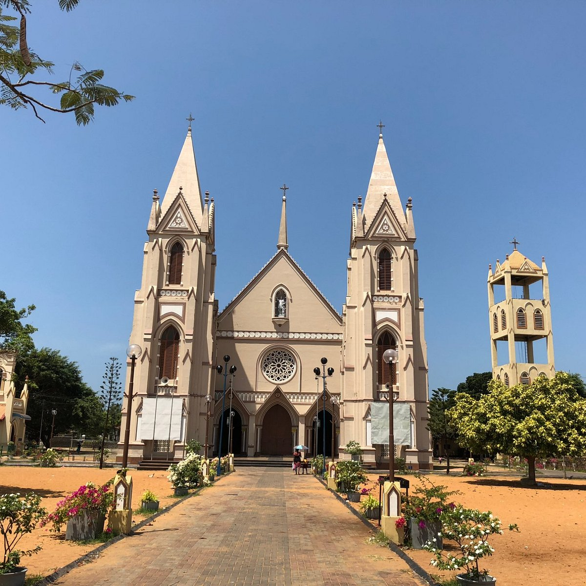

Key Attractions

Negombo Beach is perfect for sunbathing, swimming, and enjoying lively beachside cafés and restaurants.

Negombo Lagoon offers tranquil boat rides, birdwatching, and scenic views of mangroves and fishing villages.

The Fish Market is bustling with daily catches, offering an authentic glimpse into local fishing culture.

Historic churches display Portuguese and Dutch architectural heritage, with serene interiors and colorful facades.

Take a walk along the Dutch Canal for picturesque views of waterways, boats, and traditional lifestyle along the banks.